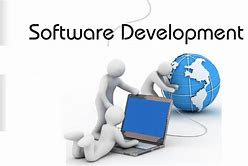
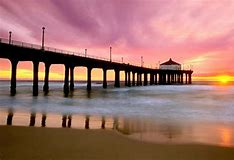
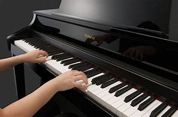

Career
I want to be a professional Software Developer. A software developer is a person concerned with facets of the software development process, including the research, design, programming, and testing of computer software. Other job titles which are often used with similar meanings are programmer, software analyst, and software engineer.
Travel
One of the places that I've visited is California. California is a U.S. state in the Pacific Region of the United States. With 39.5 million residents, California is the most populous state in the United States and the third largest by area. The state capital is Sacramento. The Greater Los Angeles Area and the San Francisco Bay Area are the nation's second- and fifth-most populous urban regions, with 18.7 million and 8.8 million residents respectively. Los Angeles is California's most populous city, and the country's second-most populous, after New York City. California also has the nation's most populous county, Los Angeles County; its largest county by area, San Bernardino County; and its fifth most densely populated county, San Francisco.
Passion
My biggest passion is music. I am a piano player. The piano is an acoustic, stringed musical instrument invented in Italy by Bartolomeo Cristofori around the year 1700, in which the strings are struck by hammers. It is played using a keyboard, which is a row of keys that the performer presses down or strikes with the fingers and thumbs of both hands to cause the hammers to strike the strings.
